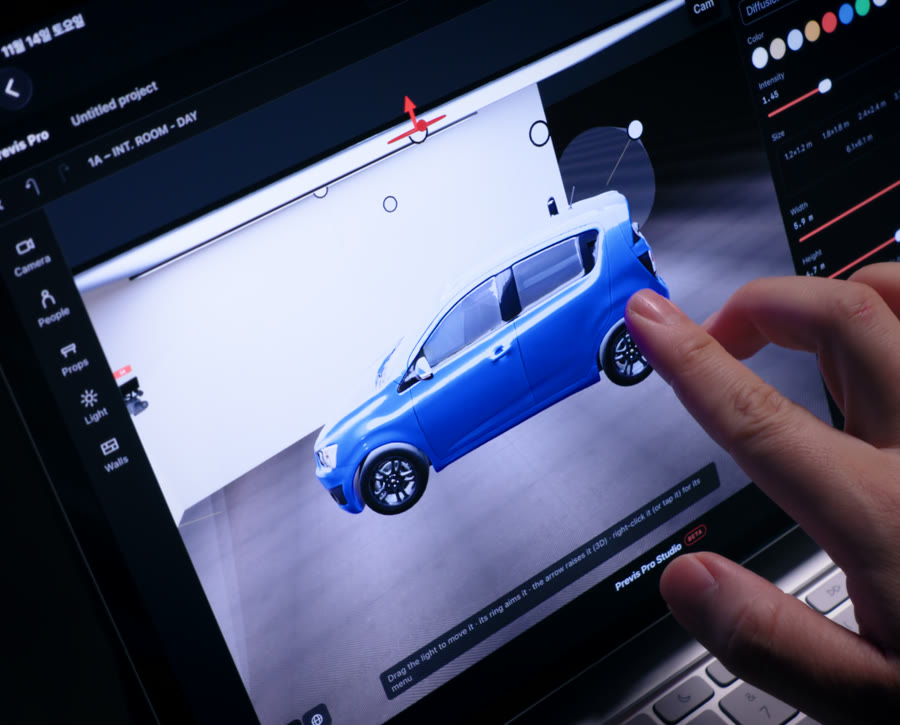
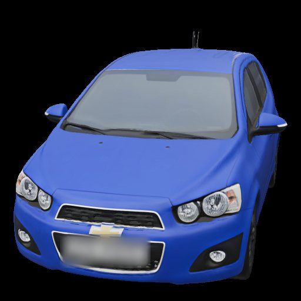
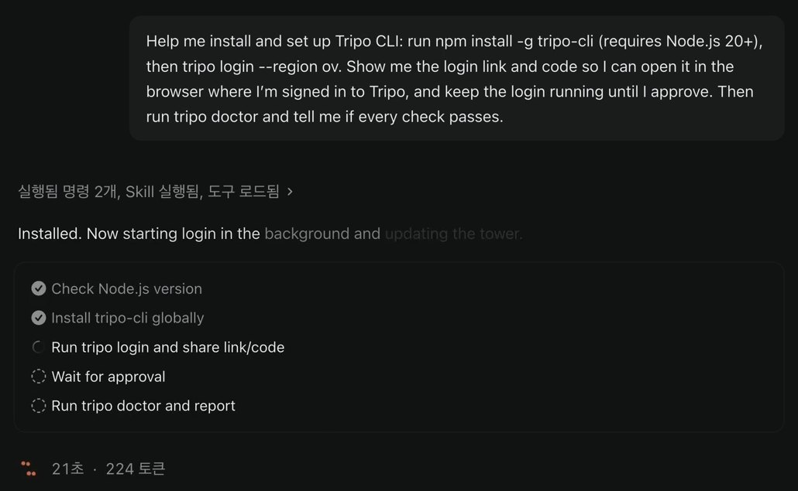
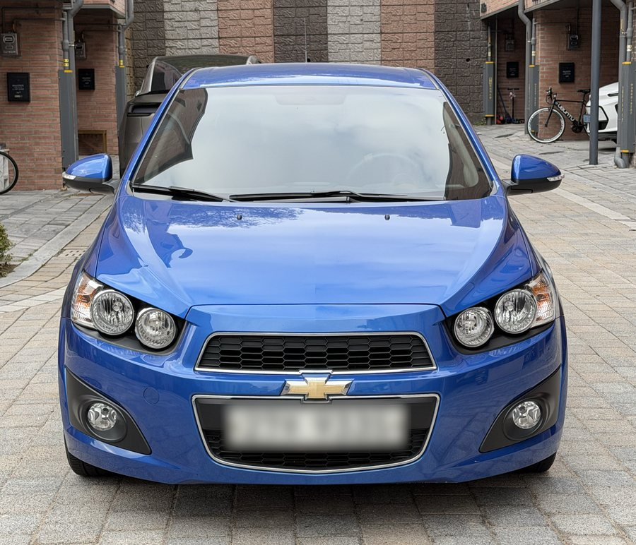
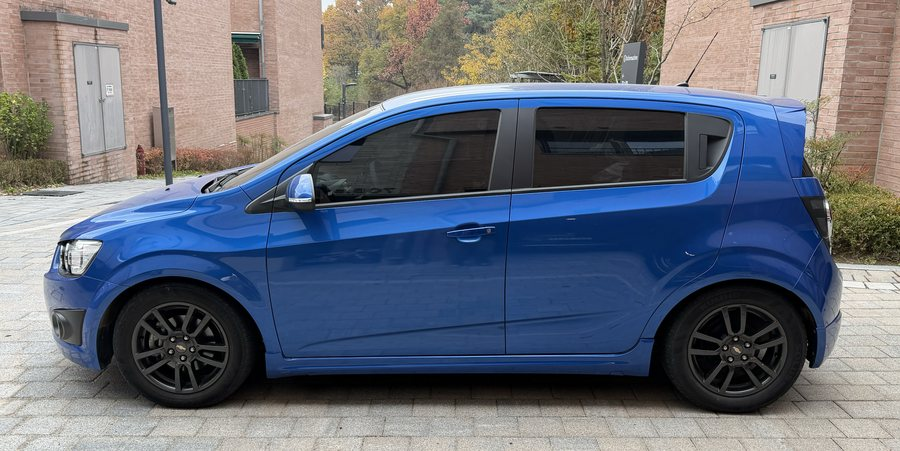
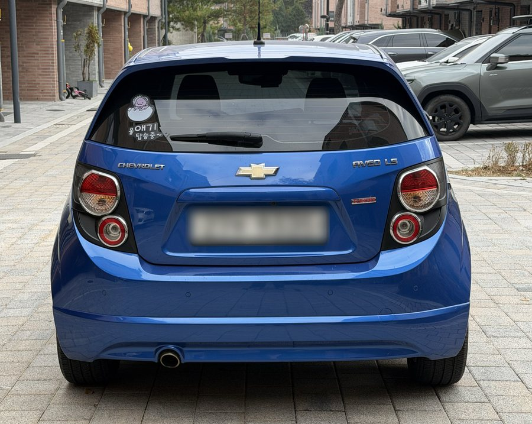
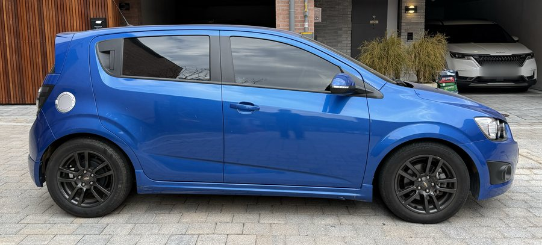
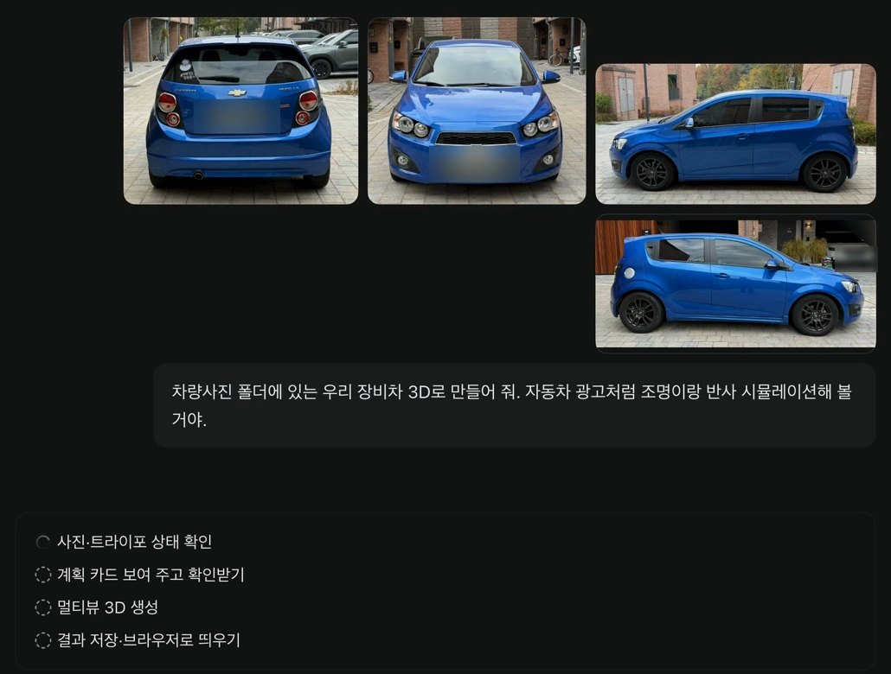
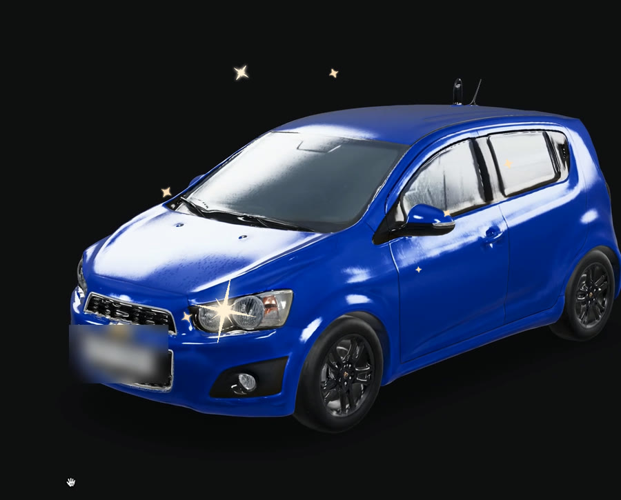

피사체사진 폴더에 있는 앞, 왼쪽, 뒤, 오른쪽 사진으로 이 피사체를 3D로 만들어 줘. 모델은 tripo-v3.1로 하고, quad 켜서 표면 매끈하게, delight 켜서 사진 속 반사랑 그림자는 빼 줘. pbr 켜고 텍스처는 detailed로. 끝나면 아이패드 프리비즈 앱에 넣을 수 있게 파일 위치 알려 줘.
크레용팜 제작 자료
찍을 피사체까지
3D로 만들어 프리비즈
촬영 전에 실제로 찍을 피사체를 3D로 만들어서 조명이랑 카메라를 미리 짜 볼 수 있어요.
웹드라마 감독 크레용입니다. 사진 몇 장으로 실제 피사체를 3D로 만들어서 아이패드 프리비즈 앱에 넣어 봤어요. 저는 제 촬영 짐차로 해 봤는데, 제품이나 소품도 똑같이 하면 돼요.

현장 가기 전에 보이는 것
- 조명을 어디에 둘지, 천을 얼마나 크게 걸지
- 피사체에 반사가 어떻게 맺히는지. 조명을 옮기면 반사도 같이 움직여요
- 어떤 앵글이 피사체를 제일 잘 보여 주는지
- 이 그림을 스태프나 클라이언트랑 미리 같이 보기
할인 받고 시작하기
아래 링크로 가입하고 초대코드를 넣으면 Pro 첫 달 60% 할인에 API 크레딧 1,000개를 받아요.
혜택 내용은 Tripo 사정에 따라 바뀔 수 있어요.
- 아래 링크를 눌러 Tripo에 들어가요.
- 가입해요.
- 프로필 사진 아래에 있는 코드 입력칸을 찾아요.
- 초대코드를 넣어요.
7WIDQV웹에서 바로 써 보기
클로드 코드가 없어도 Tripo 사이트에서 바로 만들 수 있어요.
- studio.tripo3d.ai에 들어가 로그인해요.
- 첫 화면 '이미지로 빠르게 생성' 칸에 피사체 사진을 올려요. 피사체가 잘리지 않고 배경이 단순한 사진이 잘 나와요.
- '깔끔한 토폴로지'를 고르고 생성을 눌러요. 면이 정리돼서 파일이 가볍고 프리비즈 앱에서도 잘 열려요.
- 다 되면 모델을 GLB 파일로 내려받아요.

앞, 옆, 뒤 사진 여러 장으로 만드는 기능은 Pro 플랜에 들어 있어요.
클로드 코드에 Tripo 설치하기
Tripo CLI는 터미널에서 3D를 만드는 도구예요. 설치도 클로드 코드한테 시키면 돼요. 코딩은 몰라도 돼요.
- studio.tripo3d.ai/cli에 들어가요.
- claim your API credits를 눌러 API 크레딧을 받아요.
- 클로드 코드한테 "Tripo CLI 설치해 줘"라고 말해요. 필요한 건 알아서 깔아 줘요.

API 키는 비밀번호랑 같아요. 화면 녹화나 캡처에 나오지 않게 조심하세요.
피사체 사진으로 3D 만들기
피사체 앞, 왼쪽, 뒤, 오른쪽 사진 네 장을 한 폴더에 넣고 이렇게 시켰어요.






프리비즈 앱에서 조명 짜기
만든 3D를 아이패드 PreVis Pro에 불러와서 위에 큰 흰 천, 옆 조명, 뒤 림 조명을 놓아 봤어요. 차처럼 반사가 중요한 피사체는 조명을 옮길 때마다 반사가 어떻게 바뀌는지 바로 보여서, 찍기 전에 그림을 거의 다 잡을 수 있었어요.
이럴 땐 이렇게
앞뒤가 섞인 모양이 나올 때
왼쪽, 오른쪽 사진이 뒤바뀌면 앞과 뒤가 섞인 이상한 모양이 나와요. 저도 처음엔 그랬어요. 두 사진을 바꿔서 다시 넣으니 제대로 나왔어요.
표면이 울퉁불퉁할 때
quad를 켜면 면이 정리돼서 훨씬 매끈해져요. 파일도 가벼워져요.
프리비즈 앱에서 안 열릴 때
아이패드 PreVis Pro는 너무 무거운 모델을 못 열어요. quad를 켠 모델은 가벼워서 잘 열렸어요. 형식이 안 맞으면 클로드한테 GLB나 USDZ로 바꿔 달라고 하면 돼요.